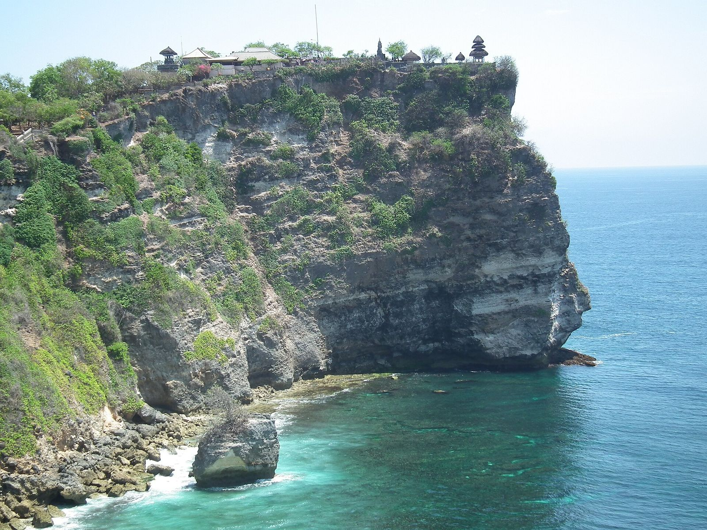
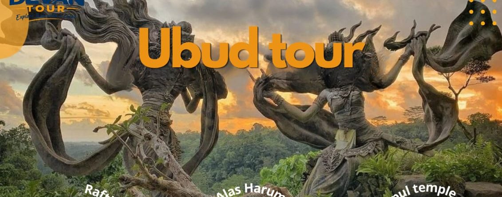

⏱ Seharian
⏱ Seharian
Tur Kintamani
Desa kerajinan, pura air suci Tirta Empul, kebun kopi, dan panorama Gunung serta Danau Batur.
Harga segera hadirDETAIL

⏱ Setengah hari (siang–malam)
Tur sore ke Semenanjung Bukit di ujung selatan Bali. Kunjungi Garuda Wisnu Kencana, bersantai di pantai berpasir putih, lalu saksikan Tari Kecak yang menceritakan kisah Ramayana di tebing Pura Luhur Uluwatu berlatar matahari terbenam.
Urutan dan tujuan dapat disesuaikan dengan keinginan Anda.
⏱ Seharian
Desa kerajinan, pura air suci Tirta Empul, kebun kopi, dan panorama Gunung serta Danau Batur.

⏱ Full day (8–10 jam)Rafting, ATV, ayunan Alas Harum, Bali Bird & Reptile Park, dan Pura Tirta Empul dalam satu hari.
 ⏱ Seharian
⏱ Seharian
Tebing dan pantai ikonik di sisi barat Nusa Penida, dengan kapal cepat dari Sanur.